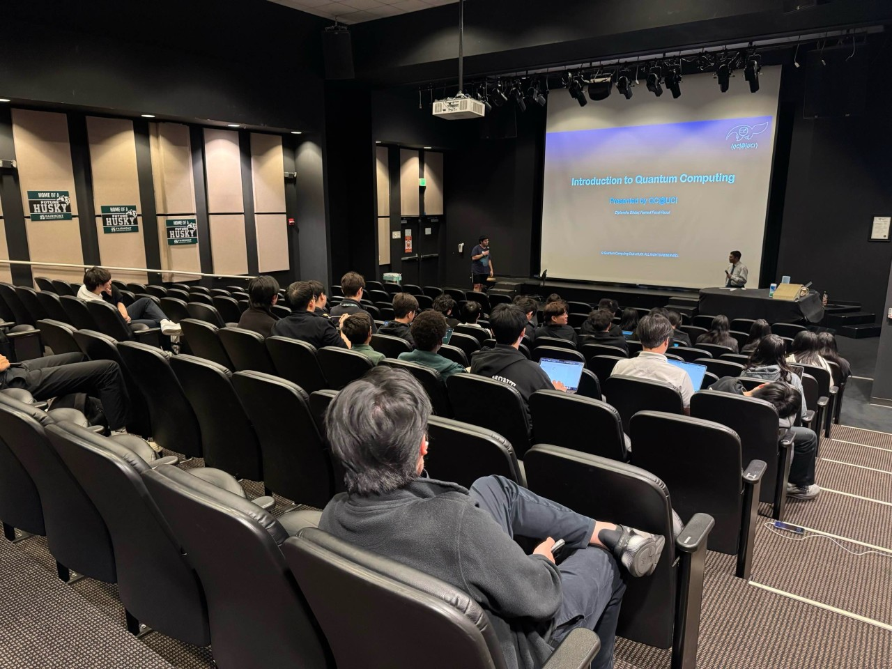
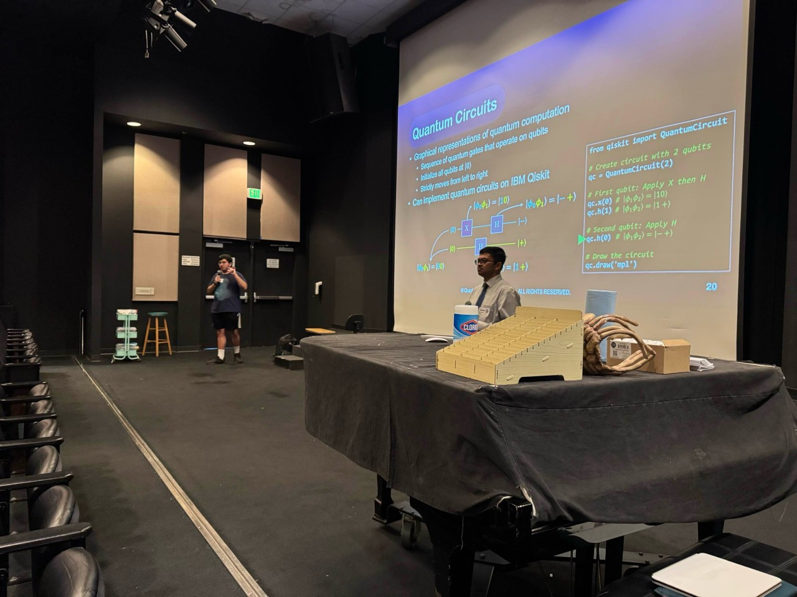
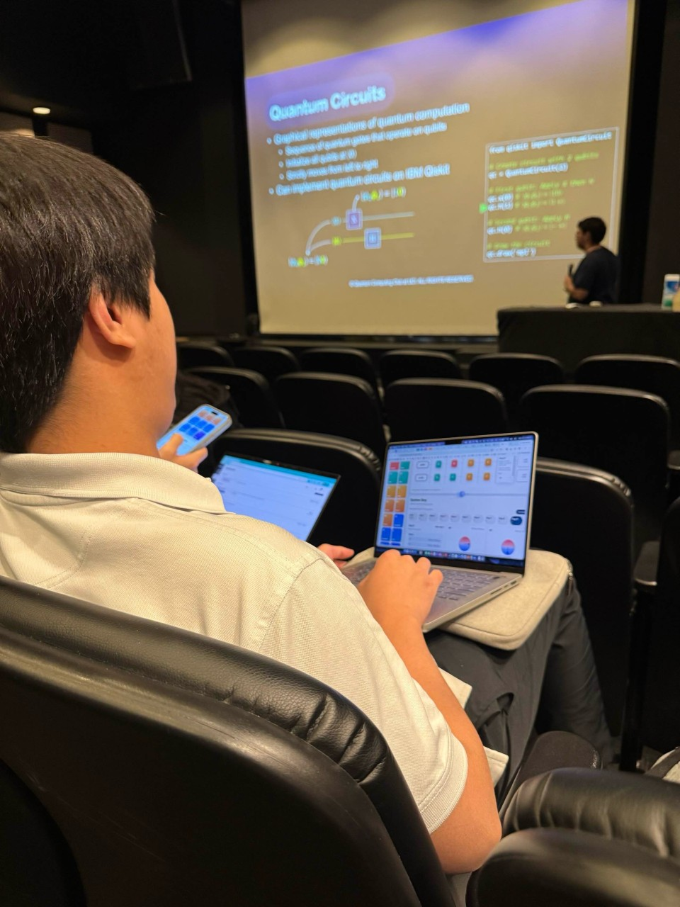

To keep celebrating World Quantum Day, QC@UCI visited Fairmont Preparatory Academy for a high school outreach workshop designed to make quantum computing feel approachable, visual, and connected to real scientific questions. The session brought together about 40 students for an introduction to the ideas behind qubits, quantum states, and the kinds of problems quantum computers are built to explore.

The workshop was led by Diptanshu and Hamed, who moved from the motivation for quantum computing into the building blocks students need to begin thinking in the field. Rather than treating quantum as something distant or inaccessible, the speakers grounded the talk in familiar mathematical intuition, visual examples, and the simple but powerful question of how information changes when it is represented quantum mechanically.
Students followed along as the discussion moved through superposition, measurement, and quantum circuits, with time for questions about what quantum computers can do, where the technology still faces limits, and how students can keep learning after a first exposure. The room stayed engaged throughout, with attendees connecting the presentation to physics, computer science, cryptography, and future research pathways.

For QC@UCI, the visit was a reminder that quantum outreach matters most when it gives students a first point of entry. By bringing undergraduate speakers into a high school classroom, the club helped show that quantum computing is not only a frontier research area, but also a community that curious students can begin joining now.
View the original community post on LinkedIn.